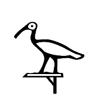
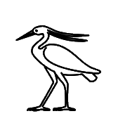
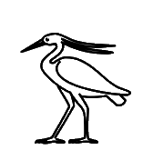
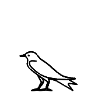
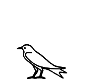
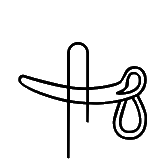
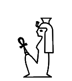

13017

134CD
Where two glyphs are given for the same code point, the first is from Unicode 5.2 and the second is from Unicode 16. The glyphs were automatically extracted from the official PDF code charts. Lines in blue starting with code point and kEH_Desc are descriptions copied verbatim from Unikemet.
|
13017
|
134CD
|
U+13017 kEH_Desc Man, standing, with a bend back, right arm forward, holding a staff/stick near the top, left arm hanging beside the body.
U+134CD kEH_Desc Man, standing, with a bend back, right arm forward, holding a staff/stick near the top, with the staff at an backwards angle, left arm hanging beside the body.
The staff in the original shape of U+13017 already had a slight backward angle, unlike the Unicode 16 form, where the staff is perfectly vertical. This will be solved in Unicode 17 by redrawing U+13017 to have the staff at a backward angle, like in the original shape. But then U+13017 and U+134CD will differ by no more than the exact degree of the angle, which seems a far-fetched distinction to make for the purposes of Unicode.
|
1303A
|

1355D
|
U+1303A kEH_Desc Man, seated, both knees up, with covered legs and arms, with a short bushy beard and long wig, holding a stick which angles slightly towards the body.
U+1355D kEH_Desc Man, seated, both knees up, with covered legs and arms, with a short bushy beard and short hair/wig, holding a stick which angles slightly towards the body.
U+1303A was given incompatible hairstyle. Will be solved in Unicode 17 by swapping the shapes and ancillary documention of U+1303A and U+1355D from Unicode 16.


130C1
|
U+130C1 kEH_Desc A forearm, with the palm of the hand facing upwards (D36) written over a human foot and lower leg (D58).
These are arguably only insignificant graphical variants of the same thing, but unless one can argue that one variant is real and the other variant is not real (never occurs), one should revert to the original Unicode 5.2 variant, and change description and image accordingly. Incidentally, both forms exist in GEG. Around 2009, there were discussions about which of the two was the most appropriate form for Unicode, and in consultation with Egyptologists it was decided to opt for the form in Unicode 5.2. Whether or not you agree this was the right decision should be irrelevant. Code charts should not be changed without a compelling reason.

130F9
|
13ABE
|
U+130F9 kEH_Desc A desert hare, lying down.
U+13ABE kEH_Desc A desert hare, lying down, with whiskers.
The original shape of U+130F9 unmistakably has whiskers. To be solved in Unicode 17 by swapping the shapes and ancillary documention of U+130F9 and U+13ABE from Unicode 16?

130FA
|
Give the hare whiskers, to revert to original shape. Moreover, the difference between U+130FA and U+130F9 should be in the height, while the width should be roughly the same, i.e. U+130FA is flatter than U+130F9. See Gardiner (1957) for the typographical motivation.


130FB
|

13AE8
|
U+130FB kEH_Desc A hamadryas baboon (Papio hamadryas), seated, hands on knees, tail folded under the rear.
U+13AE8 kEH_Desc A hamadryas baboon (Papio hamadryas), seated, hands on knees, tail upwards.
The original shape (tail up) was misplaced at U+13AE8. Will be solved in Unicode 17 by swapping the shapes and ancillary documention of U+130FB and U+13AE8 from Unicode 16.


130FC
|
U+130FC kEH_Desc A hamadryas baboon (Papio hamadryas), seated, hands on knees, tail folded under the rear (E35), in front of a sheath or receptacle with V shaped indentation at the top, bound at the top with a loop a the backside (V36G); on top of an alabaster basin with a diamond shaped inner marking (W3).
The original shape had the tail up.
|
13108
|

13B83
|
U+13108 kEH_Desc The head and neck of a long-necked horned animal, with a forked end to the neck with a horizontal line over the forked end.
U+13B83 kEH_Desc The head and neck of a long-necked horned animal, with a horizontal line written over the neck, near the bottom.
The original shape was misplaced at U+13B83. The only reasonable solution is to swap shapes and ancillary documention from Unicode 16.

13110
|
U+13110 kEH_Desc A vase on its side, with liquid issuing from it (W54), written over the horn of a bovid (F16).
Even though these are insignificant graphical variants, code charts should not be changed without a good reason. Unless a compelling case can be made that the horn over the liquid cannot occur in real inscriptions, revert to the Unicode 5.2 form.

13112
|

13BB2
|
U+13112 kEH_Desc The lower jaw-bone of a bovid (ox).
U+13BB2 kEH_Desc A lower jaw-bone of an animal with pointed teeth.
The appearance of U+13112 has changed considerably and one could even argue that U+13BB2 is closer to the original shape than to the new shape; both the original shape and U+13BB2 clearly have sharp teeth while the new shape of U+13112 does not. It is hard to escape the conclusion that the original shape of U+13112 was misplaced at U+13BB2, so that to fix what was broken, the only viable solution is to swap the shapes and ancillary documention from Unicode 16 between the two code points.


1315D
|

13C5D
|
U+1315D kEH_Desc An African sacred ibis (Threskiornis aethiopicus) (G26A), on top of a standard used for carrying religious symbols (R12).
U+13C5D kEH_Desc An African sacred ibis (Threskiornis aethiopicus) (G26A), on top of a standard used for the carrying of religious symbols with the vertical stick at the far side (R92A).
The description of U+1315D does not match the images. The original shape has a standard closer to R92A. So if a graphical variant is needed with R12, then it should be at a new code point, so here that would be U+13C5D. In other words, flip the ancillary documentation and give U+13C5D the R12 shape.
 

13163
|

13C4A
|
U+13163 kEH_Desc A gray heron (Ardea cinerea).
U+13C4A kEH_Desc A gray heron (Ardea cinerea) with a lappet.
It is by no more than a few black pixels, but it is unmistakable that the original shape was meant to exhibit a lappet. In other words, the shape of U+13163 was misplaced at U+13C4A. The only reasonable solution is to swap shapes and ancillary documention from Unicode 16.


13164
|
U+13164 kEH_Desc A gray heron (Ardea cinerea), legs drawn towards the body, seated on a pole, held upright through ropes (R91).
Give the shape a lappet to revert to Unicode 5.2.
 

13169
|

13168
|
U+13168 kEH_Desc A swallow (Hirundo rustica savignii).
The width of U+13169 should be the same as that of U+13168, but the height should be less. See Gardiner (1957) for the typographical motivation.

1316B
|

1316A
|
U+1316A kEH_Desc A house sparrow (Passer domesticus niloticus).
The width of U+1316B should be the same as that of U+1316A, but the height should be less. See Gardiner (1957) for the typographical motivation.


131A6
|
Around 2009, there were protracted discussions about what the most appropriate orientation was for Unicode, since both orientations occur in GEG, and the sign was taken from iconography and is not attested in actual running text. In consultation with Egyptologists it was decided to opt for the form in Unicode 5.2. Whether or not you agree this was the right decision back then, having studied (or not) the arguments laid out by Egyptologists in 2009, all this should be irrelevant. The glyph should not change on a whim relative to what it has been for the past 15 years since Unicode 5.2. If anyone feels a need for the other orientation, a variation selector for rotation can be used.

131C6
|
U+131C6 kEH_Desc A cobra in repose (Naja haja, I10), written over a stem of papyrus with a bud (M13).
Revert to Unicode 5.2. The description in fact already correctly reflects the original shape.
|
131D8
|
U+131D8 kEH_Desc A forearm, with the palm of the hand facing upwards (D36), written over a desert plant, with four branches, with flowers on every branch, on a horizontal base. (M26).
It is unclear which sign is on top in Unicode 5.2, so fonts have the liberty to interpret this as desired, but at least make sure the shape is consistent with the description, which is currently not the case.


131F4
|
131F6
|
13EDE
|
U+131F4 kEH_Desc The sun within a halo, encircled by a cobra (Naja haja), standing up, with expanded hood (Uraeus).
U+131F6 kEH_Desc The sun, with thee beams of sunlight coming from it.
U+13EDE kEH_Desc The sun, within a halo, with three beams of sunlight coming from it.
There is no inner circle in the original shape. One may argue this is an insignificant detail. But if one then introduces multiple code points U+131F6 and U+13EDE for the same sign with and without inner circle, then one simultaneously suggests that the inner circle is important and that the inner circle is not important. See also the Guidelines, which more often than not are divorced from what was actually done.

13227
|
U+13227 kEH_Desc An one-barbed harpoon, with handle, written horizontally (T21), on top of a crescent moon shape, connected by three lines, in front of a feather (H6), angled forwards on top of a standard with a round top, with an short vertical line beside the main pole (R14); on top of a standard used for carrying religious symbols (R12), written on top of a parcel of land with irrigation ditches (N24).
The differences may be insignificant, but it appears to me that most of the description matches the original shape better than the Unicode 16 shape. This sign deserves to be revisited by an expert


13228
|
U+13228 kEH_Desc An one-barbed harpoon, with handle, written horizontally (T21), on top of a crescent moon shape, connected by three lines, in front of a spear made into a standard, with a circle on either side of the speartip, with a loop over the standard (Jsesh/Gardiner R15); on top of a standard used for carrying religious symbols (R12), written on top of a parcel of land with irrigation ditches (N24).
I think the description matches the spear better in the original shape than in the Unicode 16 shape. This sign deserves to be revisited by an expert.


13246
|
U+13246 kEH_Desc A desert hare, lying down (E34), on top of a standard used for the carrying of religious symbols (R12), on top of a parcel of land with irrigation ditches (N24).
The Unicode 16 form does not seem to match the description, because it does not appear to have the usual R12 standard, as it does in the original. Also, in the original, the hare has whiskers.

1324A
|
This does not remotely seem to be the same character. Even if the original shape is totally wrong, the new shape would have deserved a new code point, rather than trying to recycle an existing code point for a totally different thing. It is a mystery to me where the current shape comes from; it has been in the code charts since at least Unicode 9.

1326E
|
U+1326E kEH_Desc An archaic shrine, seen from the side, with a downwards sloping roof, with upwards curving lines coming from the roof, and short vertical lines in front of the shrine.
The description of the shape of the roof matches the original shape but not the new shape.

13271
|
U+13271 kEH_Desc A façade of a shrine with a flat roof, with vertical sides, with a small doorway.
In the original, the sides were not vertical but oblique.


13277
|

13FDC
|
U+13277 kEH_Desc An obelisk of an Old Kingdom sun temple, with an circle (sun disk) on top of the obelisk.
U+13FDC kEH_Desc An obelisk of an Old Kingdom sun temple.
The original shape (without circle) was misplaced at U+13FDC. The only reasonable solution is to swap shapes and ancillary documention from Unicode 16.


1329F
|
The new shape is mirrored. Since there is a mirroring control, there is no reasonable justification for this, even if the sign normally occurs the other way around.


132BC
|

14107
|
U+132BC kEH_Desc A cloth wound on a pole, an emblem of divinity (R8), written over a butchers block, with the pole at the bottom of the block.
U+14107 kEH_Desc A cloth wound on a pole, an emblem of divinity (R8), written on top of a butchers block (T28).
The original shape of U+132BC was misplaced at U+14107. The only reasonable solution is to swap shapes and ancillary documention from Unicode 16.


132F6
|
U+132F6 kEH_Desc A sickle (U1), written over a folded piece of cloth (S29).
The description matches the original shape but not the new shape. In the new shape the piece of cloth is over the sickle.
|
1330C
|
U+1330C kEH_Desc A cobra in repose (Naja haja) (I10), written over a mace with a pear-shaped head, written vertically (T3).
The original shape underspecified which of the signs is on top. It seems fine to me to clarify the desired appearance, if there is a sufficient amount of evidence suggesting that one or the other form is correct. But the new shape should be consistent with the description. In the new shape, the cobra is under the mace.


1330D
|
U+1330D kEH_Desc Two cobras in repose (Naja haja) (I10), arranged vertically, written over a mace with a pear-shaped head, written vertically (T3).
The description matches the original shape but not the new shape. In the new shape the mace is over the cobras.
|

1332F
|
By plausible deniability one could argue the new shape underspecifies which sign is on top. But in Unicode 16, the shapes of overlays generally commit to one or the other. It would be better therefore to revert to the Unicode 5.2 shape.

13332
|
U+13332 kEH_Desc A shield with a rounded top, with a loop on top, with a boss in the center of the shield.
The original shape did not have a boss. It is fine to improve the appearance. But the new shape and the description do not seem to match. In the new shape, the boss is not really "in the center".

13341
|

1429C
|
U+13341 kEH_Desc A plough, with a cross-bar and two vertical lines on the end of the long beam.
U+1429C kEH_Desc A plough, with a cross-bar and two vertical lines on the long beam, without a circle at the front of the long beam.
It is unclear to me whether the original shape of U+13341 is closer to its new shape, or whether it rather corresponds to U+1429C. The original shape had a pronounced circle, like U+1429C, while the new shape has more of a bulb. Does it even make sense to have two code points here?


1334C
|

1334B
|
142B7
|

142B8
|
U+1334C kEH_Desc A hair-pin or burin, without the horizontal line on the top.
U+1334B kEH_Desc A hair-pin or burin, with a horizontal line above and below the oval of the pin.
U+142B7 kEH_Desc A hair-pin or burin, with a horizontal line above and below the circle of the pin.
U+142B8 kEH_Desc A hair-pin or burin, with a horizontal line under the oval of the pin, and a triangular shape on top of the oval.
The original shape of U+1334C seems to have a horizontal line on the top, so the new shape is not right, unless one can make a convincing case that the original shape was due to a misinterpretation. The intended use of U+1334C is for "a later form of U23" (Gardiner 1931) as found on the 26th Dyn. sarcophagus of Ankhnesneferibra (EA32). There is a photo on the BM website (see below link), but I have been unable to spot any tokens of U23 that Gardiner might have had in mind. The Database refers to the Pyramid of Unas, which is off by more than 2 millennia so this is unlikely to be relevant to U+1334C. It is unclear to me how the original shape of U+1334C relates to other, newly introduced code points for hair-pins.
Link

1335A
|
U+1335A kEH_Desc A horned desert viper (Cerastes cerastes) (I9), written over a spindle (U34).
The description matches the original shape but not the new shape. In the new shape the spindle is over the viper.

13393
|
U+13393 kEH_Desc A cobra in repose (Naja haja) (I10), written over a hobble for cattle without a crossbar (V20).
Apart from plausible deniability (see above), the description matches the original shape but not the new shape. It would be better to revert to the Unicode 5.2 shape.


1339C
|
U+1339C kEH_Desc A forearm, with the palm of the hand facing upwards (D36), written over a wick of twisted flax, consisting of three loops (V28).
Apart from plausible deniability (see above), the new shape, unlike the description, suggests the wick is over the arm. Make the new shape consistent with the description.

1339E
|
U+1339E kEH_Desc A swab made from a hank of fibre with two loops (V29), written over a wickerwork basket with a handle, orientated with the handle to the back (V31).
Even though these are insignificant graphical variants, code charts should not be changed without a good reason. Unless a compelling case can be made that the basket over the hank of fibre cannot occur in real inscriptions, revert to the Unicode 5.2 form.

1341B
|
U+1341B kEH_Desc A representation of two ribs, top line curving downwards.
The description matches the original shape but not the new shape. Correct the new shape to have the top line curve downwards.

13424
|
U+13424 kEH_Desc A forearm, with the palm of the hand facing upwards (D36), written over an object consisting of a horizontal rectangle with a triangular indentation at the bottom, with a vertical line on top of it, connected through a triangle (Aa21).
Apart from plausible deniability (see above), the new shape, unlike the description, suggests the object is over the arm. Make the new shape consistent with the description.


13427
|
U+13427 kEH_Desc A crescent moon shape written over a thin triangle, point downwards.
Even though these are insignificant graphical variants, code charts should not be changed without a good reason. Unless a compelling case can be made that the "thin triangle" over the moon cannot occur in real inscriptions, revert to the Unicode 5.2 form.


13043
|

1333C
|
U+13043 kEH_Desc Man, standing, back bend forward, both arms toward the front, holding a hoe with a rope connecting the two pieces (U6), with the forward piece at the level of the feet.
U+1333C kEH_Desc A hoe without a rope connecting the two pieces.
In U+13043, there was a line representing the ground, and there was no connecting rope. Now there is no line for the ground and there is a rope connecting the two pieces of the hoe. There may be good reasons to update the glyph, provided one can argue that the original form was incorrect. But there is a sign U+1333C for a hoe without connecting rope, so the original glyph of U+13043 is not implausible. If so far no token of U+13043 was located without connecting rope, then what are you going to do if you do find such a token, introduce a new code point for it? This is disastrous for the stability of Unicode.


1304F
|
U+1304F kEH_Desc Man, seated, right knee raised, raised arms at either side of the body, hands held vertically, with the handpalms inwards.
Hands were oriented outward, now inward. This may be a legitimate improvement since it has been argued that the shape with outward handpalms was plain wrong and does not occur in real inscriptions.

13055
|
U+13055 kEH_Desc Woman, seated, both knees down, with long hair and a band of cloth around the head, bound at the back, with two sticks forming a cross-like structure over the legs.
In the original shape, the hair is not long

13057
|
136D7
|

136D9
|
U+13057 kEH_Desc Woman, seated, both knees up, with covered legs and arms, with long hair, wearing a diadem, holding a flower which curves forward, with the flower orientated downwards.
U+136D7 kEH_Desc Woman, seated, both knees up, with covered legs and arms, with long hair, wearing a diadem and ureaus.
U+136D9 kEH_Desc Woman, seated, both knees up, with covered legs and arms, with long hair, wearing a diadem and ureaus, holding a tie or strap, used with sandals (ankh-sign, S34), which angles forward.
For U+13057, there was a uraeus in the original, now there is not. There may be good reasons to update the glyph of U+13057, provided one can argue the original shape was incorrect. But considering U+136D7 and U+136D9, which do have uraei, is it not plausible that the original shape might exist? If so far no token of U+13057 was located with uraeus, then what are you going to do if you do find such a token, introduce a new code point for it? This is disastrous for the stability of Unicode.

1306F
|
1375D
|
U+1306F kEH_Desc God, seated, both knees down, with a long curved beard and long hair/wig, wearing a headdress consisting of two feathers on rams horns (S77).
U+1375D kEH_Desc God, seated, both knees up, with covered legs and arms, with a long curved beard and long hair/wig, with an uraeus on the forehead, wearing a headdress consisting of two feathers and a sun-disk on rams horns, with an uraeus at either side of the feathers; holding a sceptre with a straight shaft, topped with the head of the Seth animal vertically.
For U+1306F, the sun-disk was removed. This is fine if the sun-disk in the original shape seems to have been due to a misinterpretation of known tokens. But note that there are headdresses in similar signs like U+1375D with sun-disk.

130B9
|
U+130B9 kEH_Desc A phallus with a scrotum (D52), written over a folded piece of cloth (S29).
It is debatable whether the original shape has the folded piece of cloth on top, or whether the intention was to underspecify which of the two signs is on top. In the latter case, it may be adequate to describe this simply as an overlay of the two signs without specifying which of the two is on top, and leave it to the font designer how to draw this. There are several more such cases.


130E8
|
U+130E8 kEH_Desc A jackal, standing, tail down (E17), on top of a standard used for the carrying of religious symbols, with an uraeus and SdSd-pretuberance at the front of the standard, with a mace (T3) written horizontally over the vertical pole of the standard.
The Unicode 5.2 form did not have the uraeus. If the missing uraeus was clearly a mistake, then fine. But if there is a reasonable chance one could also find occurrences without uraeus, will you then introduce a new code point for this once this happens? This is disastrous for the stability of Unicode.


130F3
|
U+130F3 kEH_Desc A basket with four pieces of grain or fruit (M39) in front of an oryx, standing (E28), on top of a parcel of land with irrigation ditches (N24).
Unicode 5.2 form did not have the four pieces of grain or fruit. Seems insignificant detail and one could just mention in the description that there is a basket without specifying what is in it.

13146
|

13C7C
|
U+13146 kEH_Desc A falcon (G5), on top of a standard used for carrying religious symbols (R12).
U+13C7C kEH_Desc A falcon (G5), on top of a standard used for the carrying of religious symbols with the vertical stick at the far side (R92A).
It is unclear to me what kind of standard was intended with the original shape of U+13146, and it seems an insignificant detail. But if one starts introducing multiple code points depending on the choice of standard (cf. U+13C7C), then it is not clear to me that the change of shape of U+13146 is within the normal bounds of allowable graphical variation for a given code point, and perhaps a fresh code point would have been warranted.

1314B
|
U+1314B kEH_Desc A falcon (G5), on top of a moon-sickle shaped boat with an higher prow than stern, with a rudder, with the head of an antilope (F81) on top of the prow, facing inwards, with a downwards line with multiple horizontal lines written over it coming from the head, on top of a sledge (P60B).
The head of antilope was not previously discernible. Are *two* rudders visible, in both images?

1314F
|
137B8
|
U+1314F kEH_Desc An archaic image of a falcon/cult image of a falcon, wearing a headdress consisting F1E34of two plumes (S9).
U+137B8 kEH_Desc God, seated, knees up, with covered legs and arms, with the head of a falcon, wearing a headdress consisting of two plumes with a sun disk (S63A/S70).
For U+1314F, the sun-disk was removed. This is fine if the sun-disk in the original shape seems to have been due to a misinterpretation of known tokens. But note that there are headdresses in similar signs like U+137B8 that do have a sun-disk.


13233
|
Child was given white crown. Bovid lost its horns.

13234
|
Child was given white crown.

13235
|
Headdress lost the sun-disk.
|
13236
|
U+13236 kEH_Desc A strip of land (N17), above a cluster of signs consisting of a bow, of an archaic type (Aa23), in front of a half round loaf of bread (X1), over a strip of land (N17); on top of a standard used for carrying religious symbols (R12), written on top of a parcel of land with irrigation ditches (N24).
Bow was mirrored.


1323C
|
U+1323C kEH_Desc An emblem with a human face with cow ears, with two upwards line which curl inwards (R129), on top of a standard used for carrying religious symbols (R12), written on top of a parcel of land with irrigation ditches (N24).
Object on standard changed from looking similar to Y8 to something closer to R28.


13241
|
U+13241 kEH_Desc The animal of Seth, lying down, tail up (E21), on top of a standard used for the carrying of religious symbols (R12) on top of a parcel of land with irrigation ditches (N24).
In the original, the standard was simplified.

13242
|
U+13242 kEH_Desc A wick of twisted flax, consisting of 3 loops (V28), in front of the red crown (S3), in front of three ripples of water, vertically aligned above one another (N35A); on top of a standard used for carrying religious symbols (R12), written on top of a parcel of land with irrigation ditches (N24).
In the original, the standard was simplified.


13247
|
U+13247 kEH_Desc A basket with four pieces of grain or fruit (M39) in front of an oryx, standing (E28), on top of a standard used for the carrying of religious symbols (R12) on top of a parcel of land with irrigation ditches (N24).
There was no basket in the original shape. I understand the information in the Database to suggest this sign also occurs without basket. It might therefore have been better to keep the sign unchanged, as the original form is not objectively wrong.

1324F
|
Object on standard changed to a kind of overlay.


1325F
|
U+1325F kEH_Desc A wooden column, written horizontally (O29), written over a half round loaf of bread (X1), written inside a plan of a rectangular enclosure, with an internal rectangle in the lower corner away from the reading direction (O6).
The original shape underspecified which of the signs is on top. It seems fine to me to clarify the desired appearance as is done here.
|
1327F
|
U+1327F kEH_Desc A tenoned door, written horizontally.
The original shape was asymmetric, while the new shape is perfectly symmetric. Can that be correct? I imagine a tenoned door not to be symmetric.

1328F
|
U+1328F kEH_Desc A fence, consisting of a horizontal base with four lines with bulbs at the end, angled backwards, with a curved line connecting the front of the base and the first line with a bulb, with a horizontal line with a loop at the front through the bulbs.
There was no loop at the front in the original.


132BA
|
U+132BA kEH_Desc A cloth wound on a pole, an emblem of divinity (R8), on top of a bag or a sack of linen, with a tie towards the front, and a (small) loop at the back (V33).
The two shapes are similar. But I cannot relate the description to the shapes. What is the loop at the back?

132BF
|
U+132BF kEH_Desc A falcon (G5) on a standard with a rounded top, with a feather (H6), angled forwards, attached to the standard in front of the falcon.
The standard has a different shape.

132C5
|
U+132C5 kEH_Desc A wig, with a fillet, with a headdress consisting of two feathers on top of the horns of a ram (S77), on top of a vertical pole, on top of a parcel of land with irrigation ditches (N24).
There appears to be a sun-disk on the headdress in the original.


132E1
|
U+132E1 kEH_Desc A collar of beads (S12), written over a sceptre with a straight shaft, a forked base, topped with the head of the Seth animal (S40).
The original shape underspecified which of the signs is on top. It seems fine to me to clarify the desired appearance as is done here. One worry for this case and for related cases is this: if the description mentioning which sign is on top is based on just one occurrence, and if in fact both possibilities exist, then the description is unduly specific. It would then be better to simply say that this is an overlay without specifying which sign is on top.


132F7
|
U+132F7 kEH_Desc A rectangular piece of cloth, with sloping fringes on its front short side, without internal decoration.
In the original, the fringes are not sloping.